Exploring and prioritizing AI-assisted features for live-chat agents, including conversation summaries grounded in discovery research.

Proof of Concept (PoC): the documented work covers ideation, prioritization and interface design; post-launch impact is not presented as a measured result.
Project Summary
In this Artificial Intelligence project for Live Chat operations productivity, I was responsible for the ideation, organization, prioritization, and creation of new AI-driven features. The project was a Proof of Concept (PoC) designed to be launched for specific clients to test the effectiveness of these new features.
Despite the need to implement Artificial Intelligence, we also gained insights into other user needs that were not necessarily AI-dependent, leading to valuable and informative results.
The features were applied to the platform's Agent interface (the user handling customer interactions), following prioritization and user needs.
Discovery process, insights and next steps

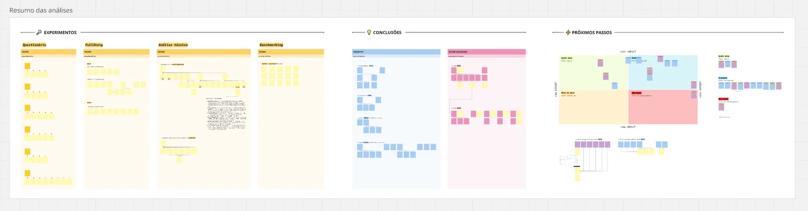

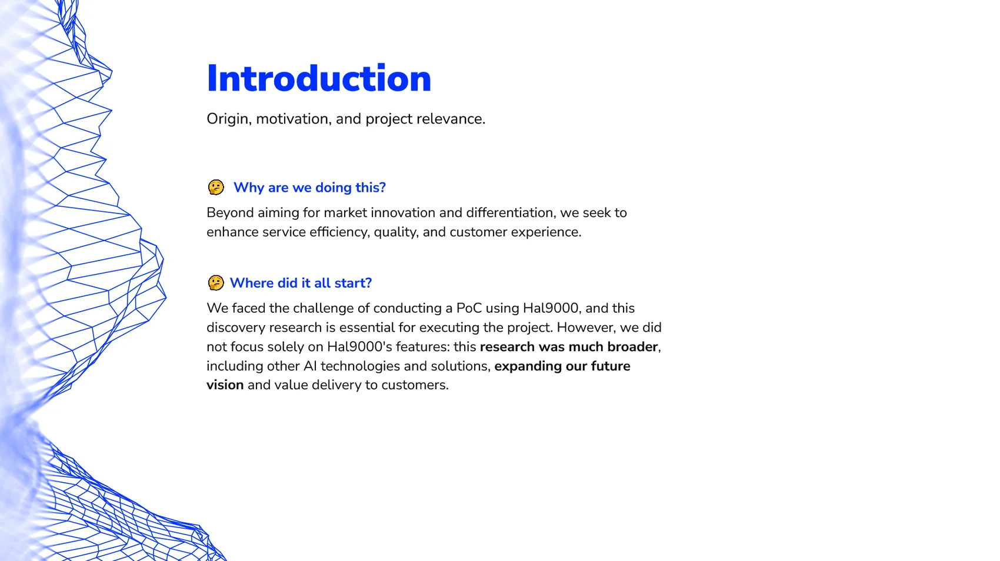

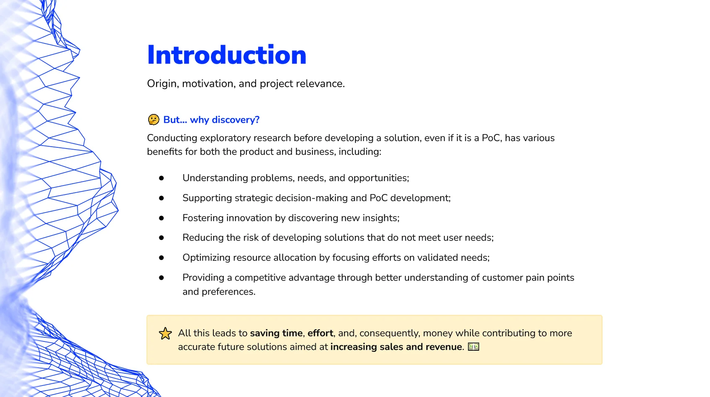

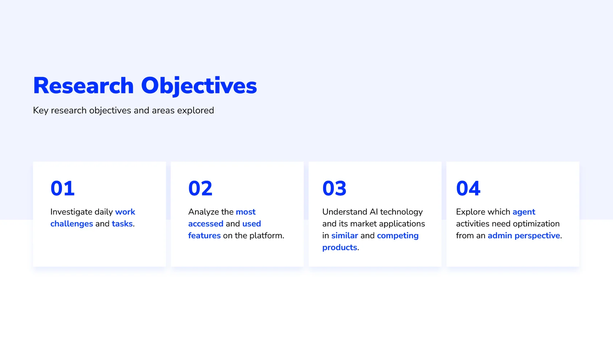

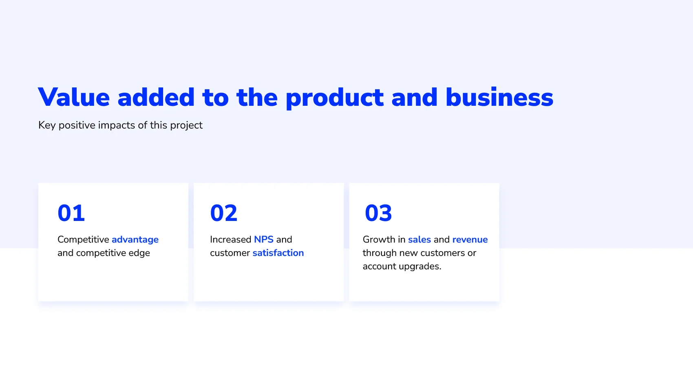

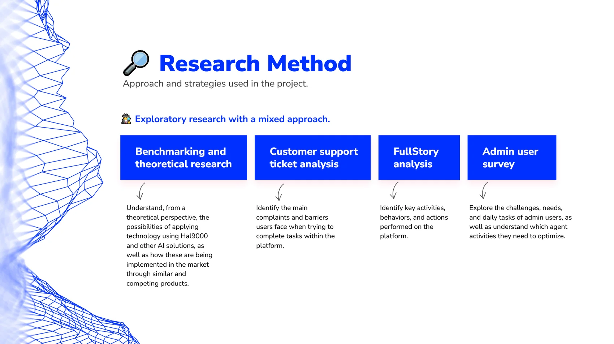

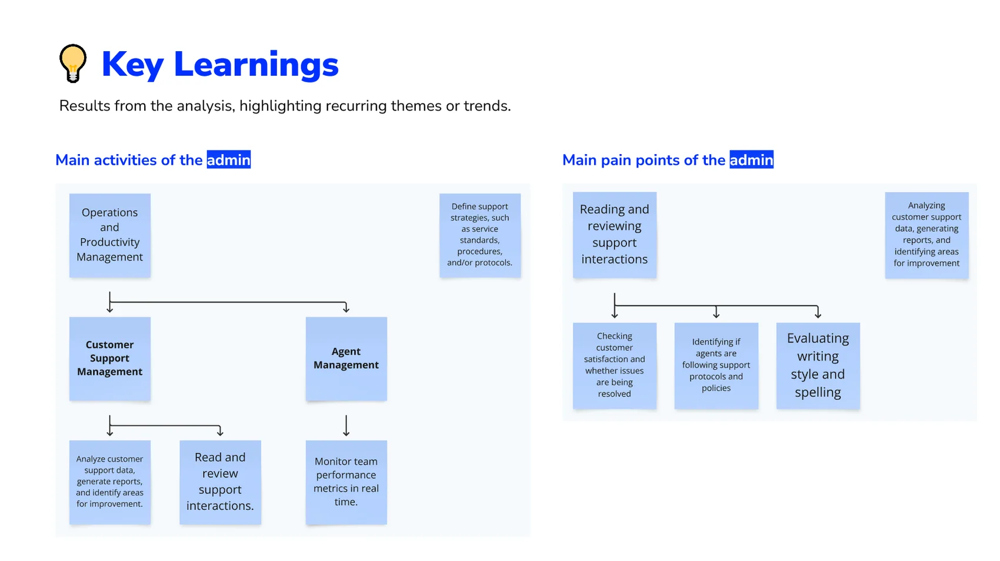

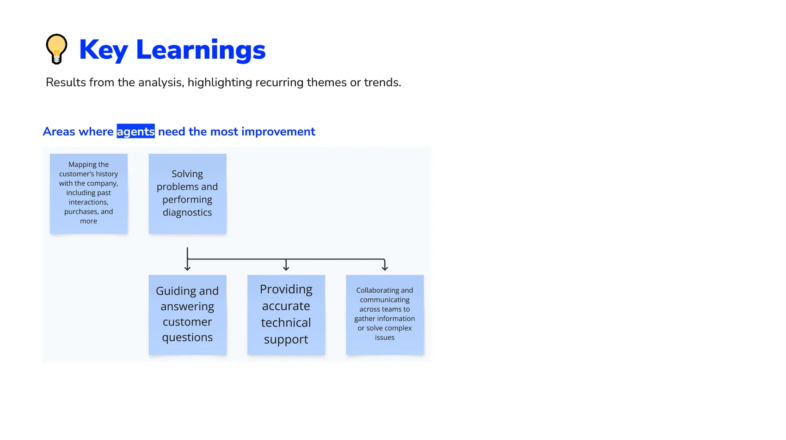

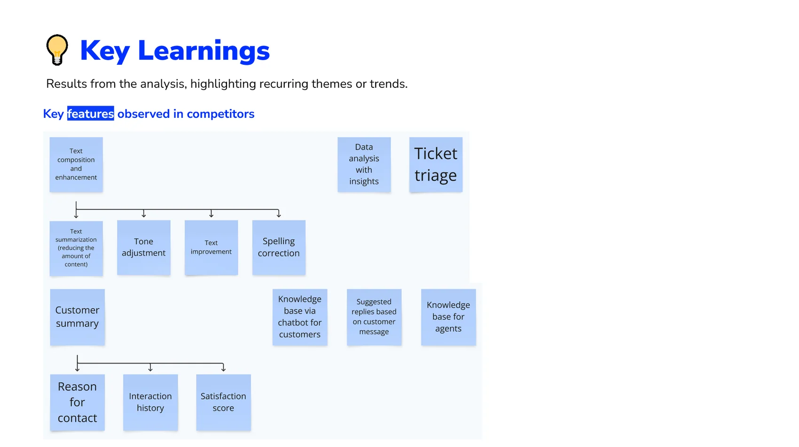

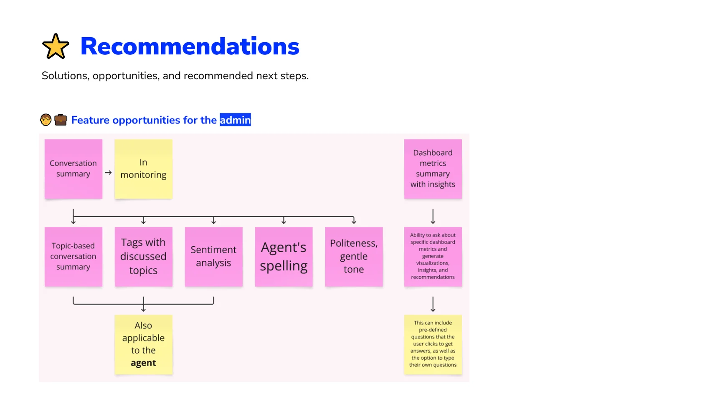

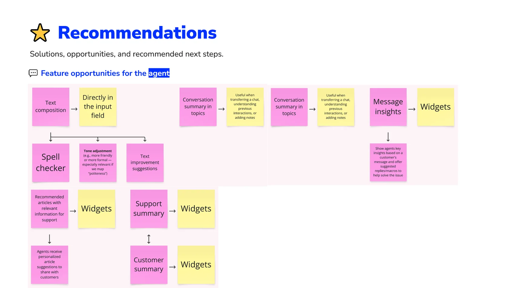

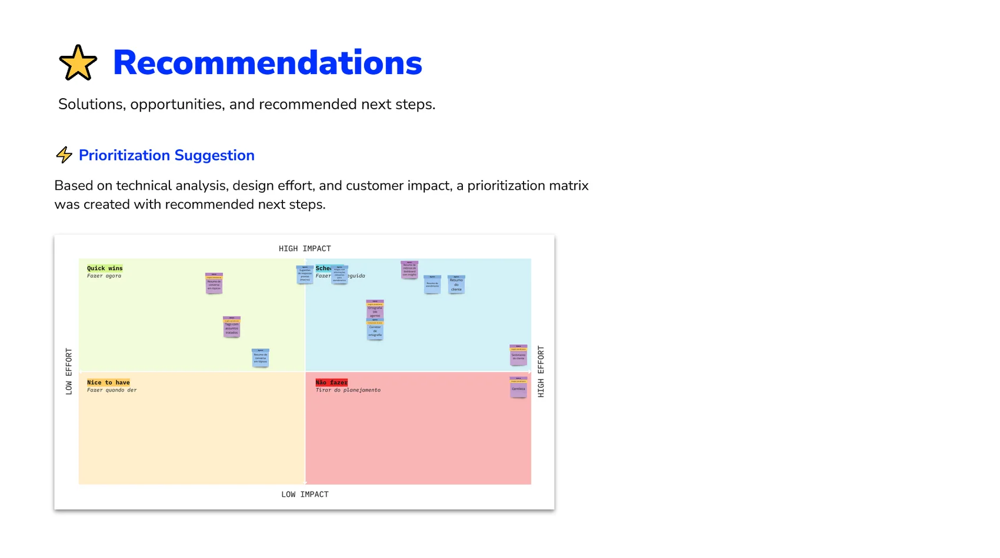

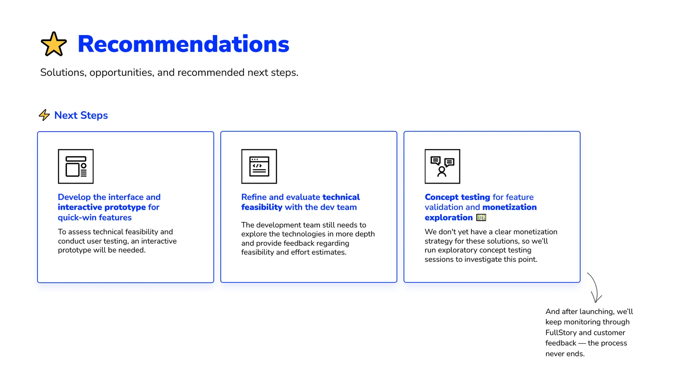
The final Design solution for the Agent
Below is a preview of how the conversation summary feature works for the agent, the first feature to be prioritized based on the discovery research results. The feature can be seen in the bottom right corner of the interface.
It is a simple solution, but it will bring agility, productivity, and great results to the operation, as well as directly assisting the agent.

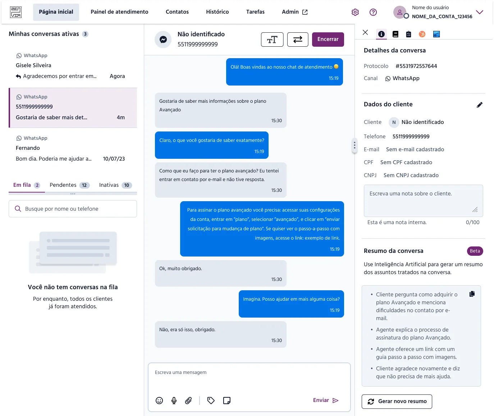